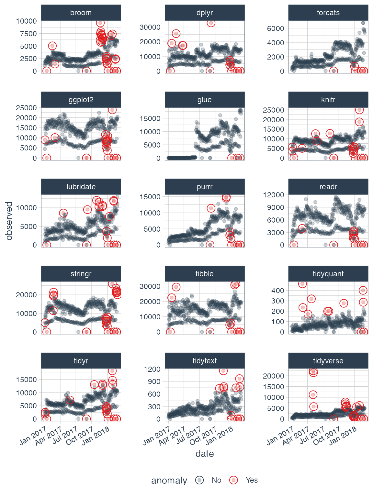
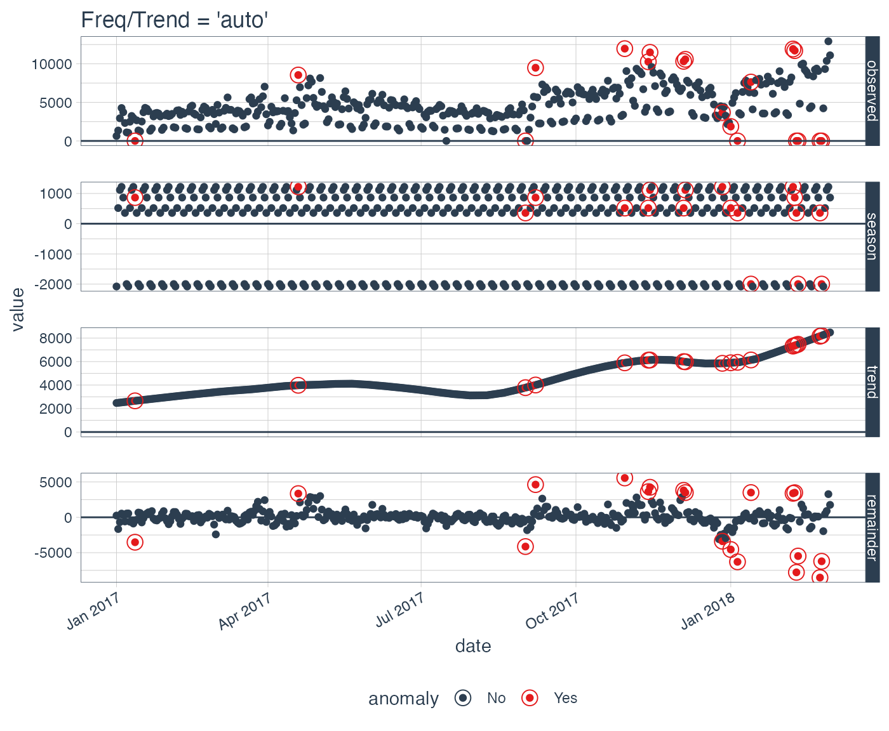
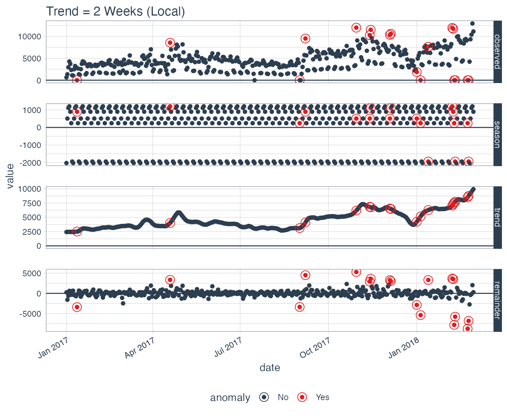
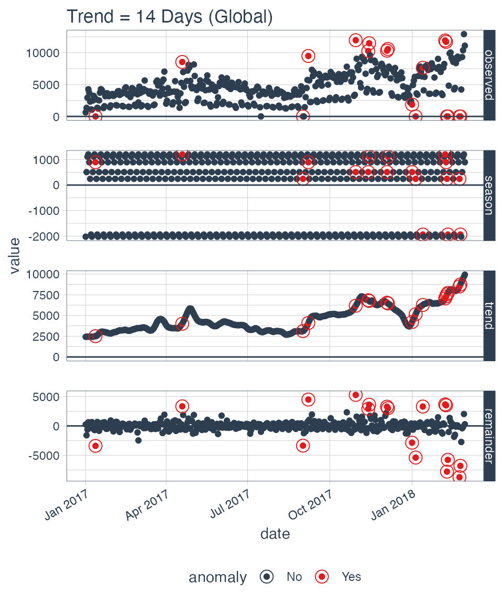
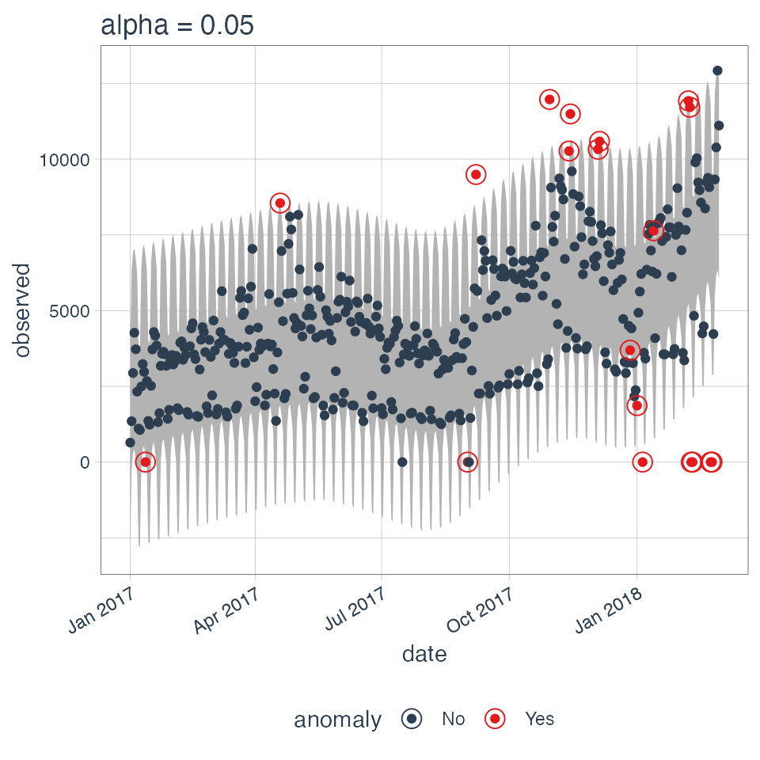
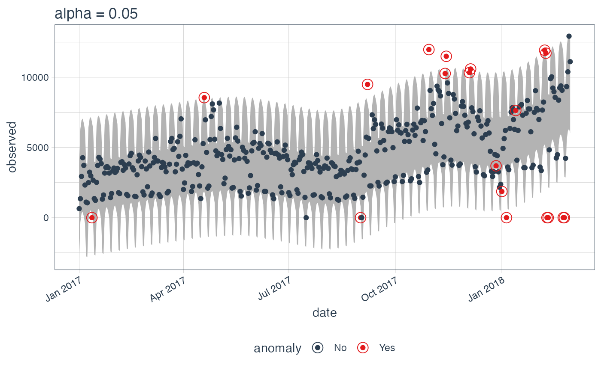
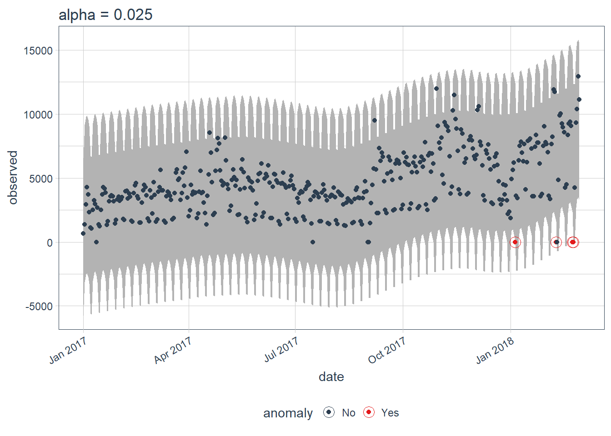
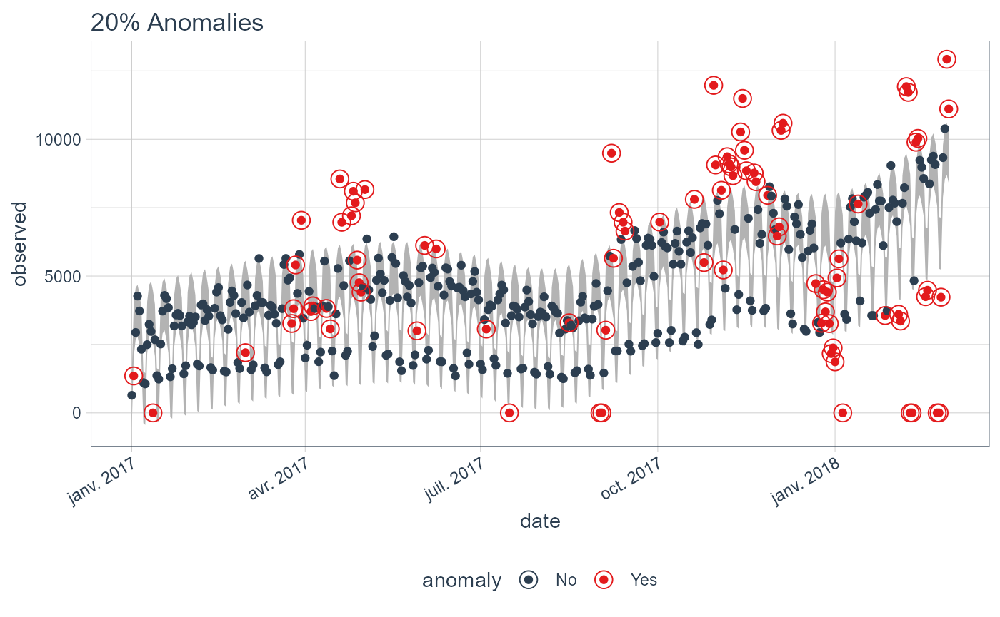
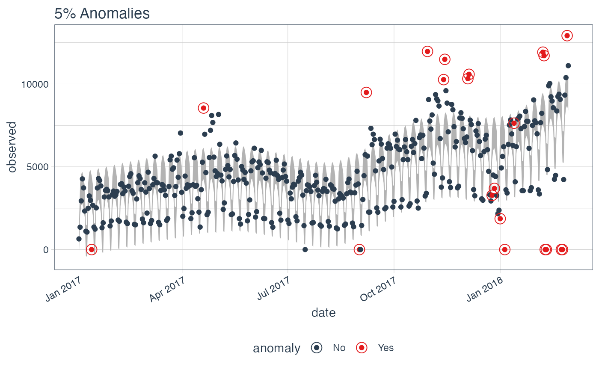

Anomalize Quick Start Guide
Business Science
2020-10-20
Source:vignettes/anomalize_quick_start_guide.Rmd
anomalize_quick_start_guide.RmdThe anomalize package is a feature rich package for performing anomaly detection. It’s geared towards time series analysis, which is one of the biggest needs for understanding when anomalies occur. We have a quick start section called “5-Minutes to Anomalize” for those looking to jump right in. We also have a detailed section on parameter adjustment for those looking to understand what nobs they can turn. Finally, for those really looking to get under the hood, we have another vignette called “Anomalize Methods” that gets into a deep discussion on STL, Twitter, IQR and GESD methods that are used to power anomalize.
Anomalize Intro on YouTube
As a first step, you may wish to watch our anomalize introduction video on YouTube.

Check out our entire Software Intro Series on YouTube!
5-Minutes To Anomalize
Load libraries.
Get some data. We’ll use the tidyverse_cran_downloads data set that comes with anomalize. A few points:
It’s a
tibbletimeobject (classtbl_time), which is the object structure thatanomalizeworks with because it’s time aware! Tibbles (classtbl_df) will automatically be converted.It contains daily download counts on 15 “tidy” packages spanning 2017-01-01 to 2018-03-01. The 15 packages are already grouped for your convenience.
It’s all setup and ready to analyze with
anomalize!
tidyverse_cran_downloads #> # A time tibble: 6,375 x 3 #> # Index: date #> # Groups: package [15] #> date count package #> <date> <dbl> <chr> #> 1 2017-01-01 873 tidyr #> 2 2017-01-02 1840 tidyr #> 3 2017-01-03 2495 tidyr #> 4 2017-01-04 2906 tidyr #> 5 2017-01-05 2847 tidyr #> 6 2017-01-06 2756 tidyr #> 7 2017-01-07 1439 tidyr #> 8 2017-01-08 1556 tidyr #> 9 2017-01-09 3678 tidyr #> 10 2017-01-10 7086 tidyr #> # … with 6,365 more rows
We can use the general workflow for anomaly detection, which involves three main functions:
-
time_decompose(): Separates the time series into seasonal, trend, and remainder components -
anomalize(): Applies anomaly detection methods to the remainder component. -
time_recompose(): Calculates limits that separate the “normal” data from the anomalies!
tidyverse_cran_downloads_anomalized <- tidyverse_cran_downloads %>% time_decompose(count, merge = TRUE) %>% anomalize(remainder) %>% time_recompose() #> Registered S3 method overwritten by 'quantmod': #> method from #> as.zoo.data.frame zoo tidyverse_cran_downloads_anomalized %>% glimpse() #> Rows: 6,375 #> Columns: 12 #> Groups: package [15] #> $ package <chr> "broom", "broom", "broom", "broom", "broom", "broom", "… #> $ date <date> 2017-01-01, 2017-01-02, 2017-01-03, 2017-01-04, 2017-0… #> $ count <dbl> 1053, 1481, 1851, 1947, 1927, 1948, 1542, 1479, 2057, 2… #> $ observed <dbl> 1.053000e+03, 1.481000e+03, 1.851000e+03, 1.947000e+03,… #> $ season <dbl> -1006.9759, 339.6028, 562.5794, 526.0532, 430.1275, 136… #> $ trend <dbl> 1708.465, 1730.742, 1753.018, 1775.294, 1797.571, 1819.… #> $ remainder <dbl> 351.510801, -589.344328, -464.597345, -354.347509, -300… #> $ remainder_l1 <dbl> -1724.778, -1724.778, -1724.778, -1724.778, -1724.778, … #> $ remainder_l2 <dbl> 1704.371, 1704.371, 1704.371, 1704.371, 1704.371, 1704.… #> $ anomaly <chr> "No", "No", "No", "No", "No", "No", "No", "No", "No", "… #> $ recomposed_l1 <dbl> -1023.2887, 345.5664, 590.8195, 576.5696, 502.9204, 231… #> $ recomposed_l2 <dbl> 2405.860, 3774.715, 4019.968, 4005.718, 3932.069, 3660.…
Let’s explain what happened:
-
time_decompose(count, merge = TRUE): This performs a time series decomposition on the “count” column using seasonal decomposition. It created four columns:- “observed”: The observed values (actuals)
- “season”: The seasonal or cyclic trend. The default for daily data is a weekly seasonality.
- “trend”: This is the long term trend. The default is a Loess smoother using spans of 3-months for daily data.
- “remainder”: This is what we want to analyze for outliers. It is simply the observed minus both the season and trend.
- Setting
merge = TRUEkeeps the original data with the newly created columns.
-
anomalize(remainder): This performs anomaly detection on the remainder column. It creates three new columns:- “remainder_l1”: The lower limit of the remainder
- “remainder_l2”: The upper limit of the remainder
- “anomaly”: Yes/No telling us whether or not the observation is an anomaly
-
time_recompose(): This recomposes the season, trend and remainder_l1 and remainder_l2 columns into new limits that bound the observed values. The two new columns created are:- “recomposed_l1”: The lower bound of outliers around the observed value
- “recomposed_l2”: The upper bound of outliers around the observed value
We can then visualize the anomalies using the plot_anomalies() function.
tidyverse_cran_downloads_anomalized %>% plot_anomalies(ncol = 3, alpha_dots = 0.25)

Parameter Adjustment
Now that you have an overview of the package, you can begin to adjust the parameter settings. The first settings you may wish to explore are related to time series decomposition: trend and seasonality. The second are related to anomaly detection: alpha and max anoms.
Adjusting Decomposition Trend and Seasonality
Adjusting the trend and seasonality are fundamental to time series analysis and specifically time series decomposition. With anomalize, it’s simple to make adjustments because everything is done with date or datetime information so you can intuitively select increments by time spans that make sense (e.g. “5 minutes” or “1 month”).
To get started, let’s isolate one of the time series packages: lubridate.
lubridate_daily_downloads <- tidyverse_cran_downloads %>% filter(package == "lubridate") %>% ungroup() lubridate_daily_downloads #> # A time tibble: 425 x 3 #> # Index: date #> date count package #> <date> <dbl> <chr> #> 1 2017-01-01 643 lubridate #> 2 2017-01-02 1350 lubridate #> 3 2017-01-03 2940 lubridate #> 4 2017-01-04 4269 lubridate #> 5 2017-01-05 3724 lubridate #> 6 2017-01-06 2326 lubridate #> 7 2017-01-07 1107 lubridate #> 8 2017-01-08 1058 lubridate #> 9 2017-01-09 2494 lubridate #> 10 2017-01-10 3237 lubridate #> # … with 415 more rows
Next, let’s perform anomaly detection.
lubridate_daily_downloads_anomalized <- lubridate_daily_downloads %>% time_decompose(count) %>% anomalize(remainder) %>% time_recompose() #> frequency = 7 days #> trend = 91 days lubridate_daily_downloads_anomalized %>% glimpse() #> Rows: 425 #> Columns: 10 #> $ date <date> 2017-01-01, 2017-01-02, 2017-01-03, 2017-01-04, 2017-0… #> $ observed <dbl> 6.430000e+02, 1.350000e+03, 2.940000e+03, 4.269000e+03,… #> $ season <dbl> -2077.6548, 517.9370, 1117.0490, 1219.5377, 865.1171, 3… #> $ trend <dbl> 2474.491, 2491.126, 2507.761, 2524.397, 2541.032, 2557.… #> $ remainder <dbl> 246.1636, -1659.0632, -684.8105, 525.0657, 317.8511, -5… #> $ remainder_l1 <dbl> -3323.425, -3323.425, -3323.425, -3323.425, -3323.425, … #> $ remainder_l2 <dbl> 3310.268, 3310.268, 3310.268, 3310.268, 3310.268, 3310.… #> $ anomaly <chr> "No", "No", "No", "No", "No", "No", "No", "No", "No", "… #> $ recomposed_l1 <dbl> -2926.58907, -314.36218, 301.38509, 420.50889, 82.72349… #> $ recomposed_l2 <dbl> 3707.105, 6319.331, 6935.079, 7054.202, 6716.417, 6223.…
First, notice that a frequency and a trend were automatically selected for us. This is by design. The arguments frequency = "auto" and trend = "auto" are the defaults. We can visualize this decomposition using plot_anomaly_decomposition().
p1 <- lubridate_daily_downloads_anomalized %>% plot_anomaly_decomposition() + ggtitle("Freq/Trend = 'auto'") p1

When “auto” is used, a get_time_scale_template() is used to determine logical frequency and trend spans based on the scale of the data. You can uncover the logic:
get_time_scale_template() #> # A tibble: 8 x 3 #> time_scale frequency trend #> <chr> <chr> <chr> #> 1 second 1 hour 12 hours #> 2 minute 1 day 14 days #> 3 hour 1 day 1 month #> 4 day 1 week 3 months #> 5 week 1 quarter 1 year #> 6 month 1 year 5 years #> 7 quarter 1 year 10 years #> 8 year 5 years 30 years
What this means is that if the scale is 1 day (meaning the difference between each data point is 1 day), then the frequency will be 7 days (or 1 week) and the trend will be around 90 days (or 3 months). This logic tends to work quite well for anomaly detection, but you may wish to adjust it. There are two ways:
- Local parameter adjustment
- Global parameter adjustment
Local Parameter Adjustment
Local parameter adjustment can be performed by tweaking the in-function parameters. Below we adjust trend = "2 weeks" which makes for a quite overfit trend.
# Local adjustment via time_decompose p2 <- lubridate_daily_downloads %>% time_decompose(count, frequency = "auto", trend = "2 weeks") %>% anomalize(remainder) %>% plot_anomaly_decomposition() + ggtitle("Trend = 2 Weeks (Local)") #> frequency = 7 days #> trend = 14 days # Show plots p1 p2

Global Parameter Adjustement
We can also adjust globally by using set_time_scale_template() to update the default template to one that we prefer. We’ll change the “3 month” trend to “2 weeks” for time scale = “day”. Use time_scale_template() to retrieve the time scale template that anomalize begins with, them mutate() the trend field in the desired location, and use set_time_scale_template() to update the template in the global options. We can retrieve the updated template using get_time_scale_template() to verify the change has been executed properly.
# Globally change time scale template options time_scale_template() %>% mutate(trend = ifelse(time_scale == "day", "2 weeks", trend)) %>% set_time_scale_template() get_time_scale_template() #> # A tibble: 8 x 3 #> time_scale frequency trend #> <chr> <chr> <chr> #> 1 second 1 hour 12 hours #> 2 minute 1 day 14 days #> 3 hour 1 day 1 month #> 4 day 1 week 2 weeks #> 5 week 1 quarter 1 year #> 6 month 1 year 5 years #> 7 quarter 1 year 10 years #> 8 year 5 years 30 years
Finally we can re-run the time_decompose() with defaults, and we can see that the trend is “2 weeks”.
p3 <- lubridate_daily_downloads %>% time_decompose(count) %>% anomalize(remainder) %>% plot_anomaly_decomposition() + ggtitle("Trend = 2 Weeks (Global)") #> frequency = 7 days #> trend = 14 days p3

Let’s reset the time scale template defaults back to the original defaults.
# Set time scale template to the original defaults time_scale_template() %>% set_time_scale_template() # Verify the change get_time_scale_template() #> # A tibble: 8 x 3 #> time_scale frequency trend #> <chr> <chr> <chr> #> 1 second 1 hour 12 hours #> 2 minute 1 day 14 days #> 3 hour 1 day 1 month #> 4 day 1 week 3 months #> 5 week 1 quarter 1 year #> 6 month 1 year 5 years #> 7 quarter 1 year 10 years #> 8 year 5 years 30 years
Adjusting Anomaly Detection Alpha and Max Anoms
The alpha and max_anoms are the two parameters that control the anomalize() function. Here’s how they work.
Alpha
We can adjust alpha, which is set to 0.05 by default. By default the bands just cover the outside of the range.
p4 <- lubridate_daily_downloads %>% time_decompose(count) %>% anomalize(remainder, alpha = 0.05, max_anoms = 0.2) %>% time_recompose() %>% plot_anomalies(time_recomposed = TRUE) + ggtitle("alpha = 0.05") #> frequency = 7 days #> trend = 91 days p4

We can decrease alpha, which increases the bands making it more difficult to be an outlier. See that the bands doubled in size.
p5 <- lubridate_daily_downloads %>% time_decompose(count) %>% anomalize(remainder, alpha = 0.025, max_anoms = 0.2) %>% time_recompose() %>% plot_anomalies(time_recomposed = TRUE) + ggtitle("alpha = 0.025") #> frequency = 7 days #> trend = 91 days p4 p5

Max Anoms
The max_anoms parameter is used to control the maximum percentage of data that can be an anomaly. This is useful in cases where alpha is too difficult to tune, and you really want to focus on the most aggregious anomalies.
Let’s adjust alpha = 0.3 so pretty much anything is an outlier. Now let’s try a comparison between max_anoms = 0.2 (20% anomalies allowed) and max_anoms = 0.05 (5% anomalies allowed).
p6 <- lubridate_daily_downloads %>% time_decompose(count) %>% anomalize(remainder, alpha = 0.3, max_anoms = 0.2) %>% time_recompose() %>% plot_anomalies(time_recomposed = TRUE) + ggtitle("20% Anomalies") #> frequency = 7 days #> trend = 91 days p7 <- lubridate_daily_downloads %>% time_decompose(count) %>% anomalize(remainder, alpha = 0.3, max_anoms = 0.05) %>% time_recompose() %>% plot_anomalies(time_recomposed = TRUE) + ggtitle("5% Anomalies") #> frequency = 7 days #> trend = 91 days p6 p7

In reality, you’ll probably want to leave alpha in the range of 0.10 to 0.02, but it makes a nice illustration of how you can also use max_anoms to ensure only the most aggregious anomalies are identified.
Further Understanding: Methods
If you haven’t had your fill and want to dive into the methods that power anomalize, check out the vignette, “Anomalize Methods”.
Interested in Learning Anomaly Detection?
Business Science offers two 1-hour courses on Anomaly Detection:
Learning Lab 18 - Time Series Anomaly Detection with
anomalizeLearning Lab 17 - Anomaly Detection with
H2OMachine Learning